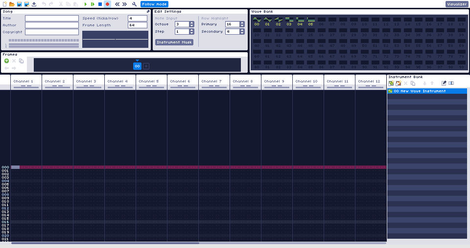

Overview
This is the official documentation for WaveTracker. WaveTracker is a sound tracker for making chiptune music. There are 24 total channels, up to 100 customizable waves, and up to 100 customizable instrument macros.
The interface is heavily based off of Famitracker, if you are familiar with that tracker, then you will notice a lot of similarities.